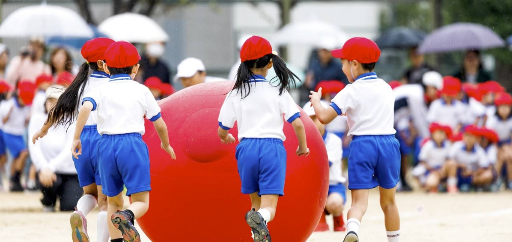
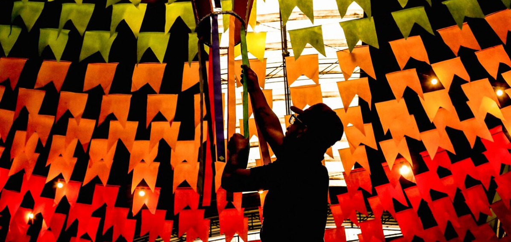
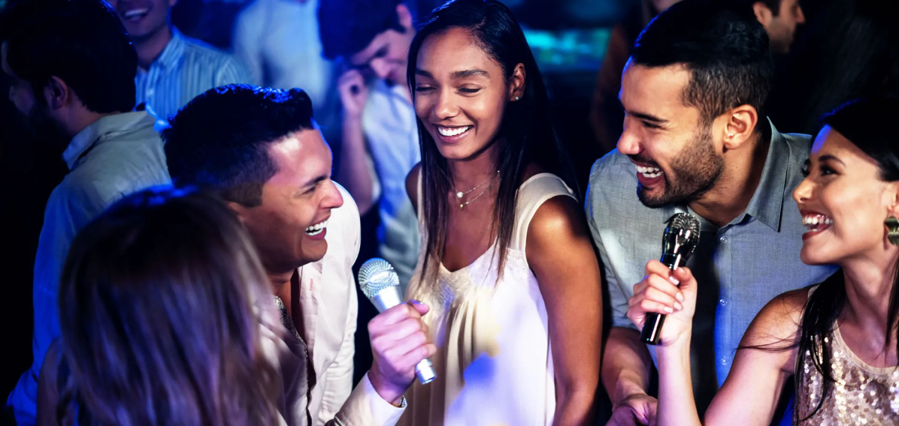
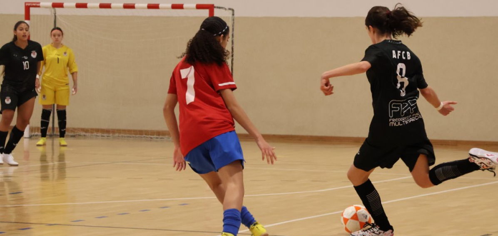

Nossos eventos são o coração pulsante da nossa comunidade, oferecendo mais do que apenas entretenimento. Eles são momentos de união que fortalecem os laços entre os participantes e promovem o intercâmbio cultural. Cada evento é cuidadosamente planejado para celebrar nossa rica herança e criar experiências significativas para todos os envolvidos.
Participar de nossos eventos é uma oportunidade para vivenciar tradições, explorar novas culturas e construir amizades duradouras. É um espaço onde todos têm a chance de se engajar ativamente e fazer parte de algo maior, contribuindo para uma comunidade mais coesa e vibrante.
Ao se juntar a nós, você não só desfruta de momentos inesquecíveis, mas também desempenha um papel crucial no crescimento e fortalecimento da nossa comunidade. Venha e descubra como cada evento pode transformar e conectar você com outros, criando memórias e laços que duram para sempre.
Eventos
UNDOKAI da UCEG
O Undokai (運動会) é um evento japonês poliesportivo muito aguardado em todos os anos e significa, literalmente, “reunião/ encontro de exercícios”. Normalmente, esse dia de jogos e atividades acontece próximo ao Dia dos Esportes (Taiiku-no-hi) - que ocorre na segunda semana do mês de outubro.
O evento não está ligado a nenhuma modalidade esportiva específica, nem visa criar um ambiente puramente competitivo. De certo modo, é parecido com o formato de uma gincana, onde os participantes realizam provas e acumulam pontos, divertindo-se ao lado dos parentes e amigos. Reunindo diversos jogos diferentes, o Undokai busca ressaltar o trabalho em equipe e os aspectos lúdicos das atividades.
Durante o Undokai, é comum ver uma série de atividades divertidas e variadas, como corridas de saco, jogos de equipe e competições de habilidades físicas e mentais. Além dos jogos tradicionais, muitas vezes há também apresentações culturais e performances que envolvem todos os participantes. Este evento é uma oportunidade para fortalecer laços comunitários e celebrar o espírito de camaradagem e cooperação, enquanto todos se divertem e compartilham momentos memoráveis com amigos e familiares.
Arraiá da UCEG
O arraial é uma festa popular brasileira que acontece principalmente durante o mês de junho e julho, em celebração às festas juninas. Essas festas têm origens nas tradições culturais e religiosas relacionadas a santos como Santo Antônio, São João e São Pedro.
Durante o arraial, as pessoas se vestem com roupas típicas, como xadrez e caipiras, e participam de uma série de atividades, como danças (como a quadrilha), comidas típicas (como milho, canjica e pé-de-moleque) e jogos tradicionais (como pescaria e correio elegante). Além disso, é comum ter fogueiras e apresentações musicais, criando um ambiente festivo e acolhedor.
O arraial é mais do que uma simples celebração, é uma oportunidade para as comunidades se reunirem e celebrarem suas tradições com alegria e entusiasmo. As festividades muitas vezes incluem concursos de fantasias, onde os participantes se vestem com trajes criativos e coloridos, e apresentações culturais que destacam a rica herança do folclore brasileiro. As crianças também têm seu espaço garantido, com atividades dedicadas especialmente a elas, como correio elegante e brincadeiras tradicionais. O arraial proporciona um ambiente de união e celebração que reforça os laços comunitários e oferece momentos inesquecíveis para todos os envolvidos.
Karaokê da UCEG
O Karaokê da União Cultural e Esportiva Guarulhense (UCEG) é um evento animado onde todos têm a oportunidade de brilhar no palco e mostrar seu talento musical. Neste evento, participantes de todos os níveis, desde cantores profissionais até entusiastas da música, podem se divertir cantando seus hits favoritos.
No Karaokê da UCEG, você pode escolher entre uma vasta seleção de músicas que abrange diversos gêneros, incluindo pop, rock, samba e muito mais. O ambiente é descontraído e acolhedor, ideal para aproveitar cada momento e soltar a voz.
Além disso, o evento oferece premiações para as melhores performances, incentivando ainda mais a participação e o espírito competitivo. Venha desfrutar de uma noite de música e diversão com a comunidade da UCEG!
Brechó Solidário da UCEG
O Brechó Solidário da União Cultural e Esportiva Guarulhense (UCEG) é um evento que oferece uma excelente oportunidade para encontrar roupas e acessórios únicos enquanto apoia uma causa nobre. No brechó, você pode explorar uma variedade de itens em ótimo estado, todos disponíveis a preços acessíveis.
Além de aproveitar as ofertas, o evento também aceita doações de roupas e acessórios que estejam em bom estado. Essas doações são essenciais para ajudar aqueles que mais precisam e fazem uma grande diferença na vida de muitas pessoas.
O Brechó Solidário da UCEG não é apenas uma chance de renovar seu guarda-roupa, mas também um momento de engajamento comunitário e solidariedade. Durante o evento, os visitantes podem interagir com a equipe da UCEG e conhecer mais sobre as iniciativas sociais apoiadas pela organização. O ambiente é acolhedor e animado, promovendo um sentimento de comunidade e colaboração. Cada compra e doação contribui diretamente para projetos que visam melhorar a vida de pessoas em situação de vulnerabilidade, reforçando o impacto positivo que eventos como este podem ter em nossa sociedade.
Torneio de Futsal Feminino da UCEG
A UCEG organiza regularmente um vibrante Torneio de Futsal Feminino, onde as equipes se enfrentam em um dia repleto de esportes e camaradagem. O evento celebra o talento e a paixão das mulheres pelo futsal, oferecendo uma excelente plataforma para que as atletas mostrem suas habilidades e se divirtam em um ambiente competitivo e amistoso.
Durante o torneio, as equipes competem em jogos emocionantes, proporcionando ao público uma experiência envolvente e cheia de energia. As partidas são bem organizadas, garantindo que todas as participantes tenham a chance de brilhar e se destacar.
Além das competições, o evento também inclui atividades de integração e oportunidades para que todos os participantes, torcedores e equipes possam interagir e fortalecer laços. É uma ocasião perfeita para celebrar o esporte feminino, promover o espírito de equipe e desfrutar de uma jornada esportiva memorável.